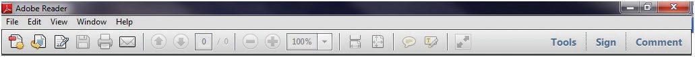

There are many programs that are useful for project managers that can be downloaded from a website. Some of them are free while others are trial versions or are available for a license fee. To download and install software on a computer, you must have administrative rights on that computer. If you are trying to use a computer at a company for your homework in this class, you probably do not have administrative rights to install software. You need to use a private computer on which you can log in as the administrator or as a user with rights to install software.
Alternatively, in some campus computer labs you are allowed to install software, but the computer is refreshed to its original configuration when the machine is restarted. If you use a computer in a common lab, be sure to complete the assignment before the machine is restarted.
In this exercise, you download and install Adobe Reader. This program allows you to read files that are saved in the PDF format. This format is very popular because it allows distribution of documents that may be easily viewed but not changed.
Using a web browser, go to http://www.adobe.com/reader. The Adobe home page displays as shown in Figure 1.12 "Adobe Reader Download Page".
Figure 1.12 Adobe Reader Download Page

Source: Adobe product screenshot reprinted with permission from Adobe Systems Incorporated.
From the list of programs on your computer start Adobe Reader to confirm that it is successfully installed, as shown in Figure 1.13 "Adobe Reader Installed".
Figure 1.13 Adobe Reader Installed
Source: Adobe product screenshot reprinted with permission from Adobe Systems Incorporated.
Review your work and use the following rubric to determine its adequacy:
| Element | Best | Adequate | Poor |
|---|---|---|---|
| File name | N/A | ||
| Downloaded software from an Internet site and installed it on a computer | Program is installed and functioning | Same as Best | Did not allow time to find a computer on which software could be installed; process failed |
There are many programs that are useful for project managers that can be downloaded from a website. Some of them are free while others are trial versions or are available for a license fee. To download and install software on a computer, you must have administrative rights on that computer. If you are trying to use a computer at a company for your homework in this class, you probably do not have administrative rights to install software. You need to use a private computer on which you can log in as the administrator or as a user with rights to install software.
Alternatively, in some campus computer labs you are allowed to install software, but the computer is refreshed to its original configuration when the machine is restarted. If you use a computer in a common lab, be sure to complete the assignment before the machine is restarted.
In this exercise, you download and install Google Earth. This program provides information that would be valuable to a project manager who needs to consider the implications of the location of a project.
Using a web browser, go to http://earth.google.com. The Google Earth home page displays as shown in Figure 1.14 "Google Earth Home Page".
Scroll through and review the Terms of Service. See Figure 1.15 "Terms of Service".
Choose a folder into which the file will be downloaded. The default choice in Windows is usually the Downloads folder in My Documents. Make note of where the file will be placed so you can find it in the next step.
The file that is downloaded is a program that can be executed by clicking the file name. It is an installation program that manages the rest of the download and installation process. In some browsers, the option to click the file name is available from the browser window, and in others, you must use a file management program like Windows Explorer to find the file and then double-click the file name. This process is typical of most programs that you download and install.
Click or double-click the file name to start the installation. A security warning box may display seeking your permission to install a program, as shown in Figure 1.16 "Permission to Run the Installation Program". Only programs from trusted sites should be installed.
Click the Run button. The program will contact the Google Earth website and begin the process of downloading the main part of the program. A window with a progress bar displays to indicate how much of the file has been successfully transferred, as shown in Figure 1.17 "Progress Bar".
When the installation process is complete, the program starts. Any location on earth may be entered, and a satellite image with a variety of accompanying information is displayed, as shown in Figure 1.18 "Google Earth Installed".
Review your work and use the following rubric to determine its adequacy:
| Element | Best | Adequate | Poor |
|---|---|---|---|
| File name | N/A | ||
| Downloaded software from an Internet site and installed it on a computer | Program is installed and functioning | Same as Best | Did not allow time to find a computer on which software could be installed; process failed |
The operating system of your computer manages the display on the monitor or screen. The operating system can make a copy of the screen and save it to disk or to the clipboard—a temporary storage area—and then the image of the screen can be pasted into a word processing document. The document can be saved and then attached to an e-mail or otherwise sent to team members. This skill might be used to illustrate a computer problem, illustrate a point, or prove that you have followed directions properly.
Save the file to a folder of your choice, such as Ch01StudentName, where you use your name without spaces in place of StudentName. Save the file as a Word 97–2003 file type. Your display may show the .doc file extension that is characteristic of the file type if it is set to display file extensions. See Figure 1.19 "File Name in Save As Dialog Box".
In the first line of the document, type Chapter 1 Exercises by StudentName where you replace StudentName with your name. Press the Enter key to move the insertion point to the next line, as shown in Figure 1.20 "Document with Insertion Point on Second Line".
Press the Enter key twice to create a new empty line below the image. See Figure 1.21 "Capture of the Google Maps Screen with Insertion Point below the Image".
Review your work and use the following rubric to determine its adequacy:
| Element | Best | Adequate | Poor |
|---|---|---|---|
| File name | Ch01StudentName in the Word 2003 format where StudentName is replaced by your name | Same as Best | Different file name than specified without the student’s name |
| Download software from an Internet site and install it on a computer | Title; screen capture of the Google Maps site; insertion point below the image | Title plus screen capture; insertion point on same line as image | Missing title |
The operating system of your computer manages the display on the monitor or screen. The operating system can make a copy of the screen and save it to disk or to the clipboard—a temporary storage area—and then the image of the screen can be pasted into a word processing document. The document can be saved and then attached to an e-mail or otherwise sent to team members. This skill might be used to illustrate a computer problem, illustrate a point, or prove that you have followed directions properly.
Review your work and use the following rubric to determine its adequacy:
| Element | Best | Adequate | Poor |
|---|---|---|---|
| File name | Ch01StudentName in the Word 2003 format where StudentName is replaced by your name | Same as Best | Different file name than specified without the student’s name |
| Capture a computer screen and paste it into a word processing document | Title; screen capture of the Google Maps site; insertion point below the image | Title plus screen capture; insertion point on same line as image | Missing title |
The operating system of your computer manages the display on the monitor or screen. The operating system can make a copy of the screen and save it to disk or to the clipboard—a temporary storage area—and then the image of the screen can be pasted into a word processing document. The document can be saved and then attached to an e-mail or otherwise sent to team members. This skill might be used to illustrate a computer problem, illustrate a point, or prove that you have followed directions properly.
Review your work and use the following rubric to determine its adequacy:
| Element | Best | Adequate | Poor |
|---|---|---|---|
| File name | Ch01StudentName in the Word 2003 format where StudentName is replaced by your name | Same as Best | Different file name than specified without the student’s name |
| Capture a computer screen and paste it into a word processing document | Title; screen capture of the Google Maps site; insertion point below the image | Title plus screen capture; insertion point on same line as image | Missing title |
You will visit sites that contain supporting information and useful templates. To save the addresses of these sites, you can create in a folder named Project Management in your web browser.
Open your web browser program. In the address box, type http://maps.google.com and then press Enter. The Google Maps home page displays as shown in Figure 1.22 "Google Maps Home Page".
On your keyboard, at the lower left, locate the Control (CTRL) key. Press and hold the CTRL key, and then on the keyboard press B.In the future, this sequence of holding the Control key and pressing another key will be written with a plus sign (e.g., Ctrl + B). The Bookmark toolbar displays, as shown in Figure 1.23 "Chrome Bookmarks Bar".
On the toolbar above the Bookmarks bar, click the Tools button. On the menu, click Bookmark Manager. The Bookmark Manager dialog box displays, as shown in Figure 1.24 "Chrome Bookmark Manager Dialog Box".
In the New Folder dialog box, in the Name box, type Project Management and then click OK. The Project Management folder is added to the Bookmarks bar as shown in Figure 1.25 "Folder Added to the Bookmarks Bar".
On the toolbar, click the Tools button. On the menu, click Bookmark manager. The Bookmark manager dialog box displays, as shown in Figure 1.26 "Managing Bookmarks".
In the Bookmark Manager dialog box, in the left pane, click the Project Management folder. The link to Google Maps is displayed in the right pane to indicate that it is now in the Project Management folder. The link to Google Maps displays in the pane to the right, as shown in Figure 1.27 "Link Placed in the Project Management Folder".
Start the Chrome browser again. On the Bookmarks bar, click the Project Management folder. The link to Google Maps is displays under the Project Management folder on the Bookmarks bar, as shown in Figure 1.28 "Project Management Folder on the Chrome Bookmarks Bar".
Review your work and use the following rubric to determine its adequacy:
| Element | Best | Adequate | Poor |
|---|---|---|---|
| File name | Ch01StudentName.doc | Same name using .docx format | Does not include student name in file name |
| Create a folder of project management web addresses in a web browser | Folder named Project Management on the Bookmarks toolbar with a working link to Google Maps | Same as Best | Project Management folder without a working link to Google Maps or just a link to Google Maps as one of the Favorites but not in a folder |
You will visit sites that contain supporting information and useful templates. To save the addresses of these sites, you can create a folder named Project Management in your web browser.
Open your web browser program. In the address box, type http://maps.google.com and then press Enter. The Google Maps home page displays as shown in Figure 1.29 "Firefox 3 Browser".
On the toolbar, click the Bookmarks button. The Edit This Bookmark dialog box displaysThis assumes that you have not previously added this site as a bookmark. as shown in Figure 1.30 "Bookmark Dialog Box in Firefox". The default location for the bookmark is the Unsorted Bookmarks.
In the Edit This Bookmark dialog box, click the Done button. The web address for http://maps.google.com is placed in the list of unsorted bookmarks, and the Bookmarks toolbar displays, as shown in Figure 1.31 "Firefox Bookmarks Bar".
On the Menu bar, click Bookmarks. On the menu, click Organize Bookmarks. The Library dialog box displays, as shown in Figure 1.32 "Library of Bookmarks in Firefox".
In the Add Folder dialog box, in the Name box, type Project Management as shown in Figure 1.33 "Folder Added to the Bookmarks Bar".
In the Library dialog box, in the left pane, click Unsorted Bookmarks to show its bookmarks. Locate the link to Google Maps, as shown in Figure 1.34 "Managing Bookmarks".
In the Library dialog box, in the left pane, click the Project Management folder. The link to Google Maps is displayed in the right pane to indicate that it is now in the Project Management folder, as shown in Figure 1.35 "Link Placed in the Project Management Folder".
Start the Firefox browser again. On the Bookmarks bar, click the Project Management folder. The link to Google Maps displays under the Project Management folder on the Bookmarks bar, as shown in Figure 1.36 "Project Management Folder on the Bookmarks Bar".
Review your work and use the following rubric to determine its adequacy:
| Element | Best | Adequate | Poor |
|---|---|---|---|
| File name | N/A | ||
| Create a folder of project management web addresses in a web browser | Folder named Project Management on the Bookmarks toolbar with a working link to Google Maps | Same as Best | Project Management folder without a working link to Google Maps or just a link to Google Maps as one of the Favorites but not in a folder |
You will visit sites that contain supporting information and useful templates. To save the addresses of these sites, you can create a folder named Project Management in your web browser.
Open your web browser program. In the address box, type http://maps.google.com and then press Enter. The Google Maps home page displays as shown in Figure 1.37 "Google Maps Home Page".
On the toolbar, click the Favorites button. The Add to Favorites menu displays as shown in Figure 1.38 "Add to Favorites Menu".
To the right of Add to Favorites, click the arrow.In the future, arrows associated with buttons will be referred to with the button name (e.g., click the Add to Favorites button). On the menu, click Add to Favorites bar. Click outside the menu to close it. The web address for maps.google.com is placed in the Favorites toolbar and the toolbar is displayed, as shown in Figure 1.39 "Internet Explorer Favorites Toolbar".
On the Favorites toolbar, click the Favorites button. On the menu, click the Add to Favorites arrow. On the menu, click Organize Favorites. The Organize Favorites dialog box displays, as shown in Figure 1.40 "Internet Explorer Favorites Dialog Box". Your favorites and folders will be different from those shown.
Type Project Management and then press Enter. The Project Management folder is added at the bottom of the list of favorite links and folders, as shown in Figure 1.41 "Folder Added to the List of Favorites".
Locate the Favorites Bar folder on the list of favorites. Drag the Project Management folder onto the Favorites Bar folder and release the mouse button. The Project Management folder is a subfolder of the Favorites Bar, as shown in Figure 1.42 "Project Management Folder Moved into the Favorites Bar Folder".
Click the Project Management folder. The Google Maps link displays in the Project Management folder, as shown in Figure 1.43 "Google Maps Link in the Project Management Subfolder".
Start the Internet Explorer browser again. On the Favorites toolbar, click the Project Management folder. The link to Google Maps displays under the Project Management folder on the Bookmarks bar, as shown in Figure 1.44 "Project Management Folder on the Internet Explorer Bookmarks Bar".
Review your work and use the following rubric to determine its adequacy:
| Element | Best | Adequate | Poor |
|---|---|---|---|
| File name | Ch01StudentName.doc | .docx format | Student name not in file name |
| Create a folder of project management web addresses in a web browser | Folder named Project Management on the Favorites toolbar with a working link to Google Maps | Same as Best | Project Management folder without a working link to Google Maps or just a link to Google Maps as one of the Favorites but not in a folder |
You will visit sites that contain supporting information and useful templates. To save the addresses of these sites, you can create a folder named Project Management in your web browser.
Open your web browser program. In the address box, type http://maps.google.com and then press Enter. The Google Maps home page displays as shown in Figure 1.45 "Google Maps Home Page".
On the toolbar, click the View Favorites button, and then click the Add to Favorites button. The Add a Favorite dialog box displays as shown in Figure 1.46 "Add a Favorite Dialog Box".
Click the New Folder button. In the Create a Folder dialog box, in the Folder Name box, type Project Management. Confirm that Favorites is chosen in the Create in box, as shown in Figure 1.47 "Create a New Folder".
In the Add a Favorite dialog box, observe that the new folder displays in the Create in box, as shown in Figure 1.48 "Internet Explorer Add a Favorite Dialog Box".
Click the View Favorites button. Click the Favorites tab, if necessary. Scroll to the new Project Management folder and then click it. The link to Google Maps is stored within the Project Management folder, as shown in Figure 1.49 "Google Maps Link in the Project Management Folder".
Review your work and use the following rubric to determine its adequacy:
| Element | Best | Adequate | Poor |
|---|---|---|---|
| File name | Ch01StudentName.doc | .docx format | StudentName not in file name |
| Create a folder of project management web addresses in a web browser | Folder named Project Management on the Favorites toolbar with a working link to Google Maps | Same as Best | Project Management folder without a working link to Google Maps or just a link to Google Maps as one of the Favorites but not in a folder |
You will visit sites that contain supporting information and useful templates. To save the addresses of these sites, you can create a folder named Project Management in your web browser.
Open your web browser program. In the address box, type http://maps.google.com and then press Enter. The Google Maps home page displays as shown in Figure 1.50 "Safari Browser".
On the toolbar, click the Bookmarks button. A dialog box displaysThis assumes that you have not previously added this site as a bookmark. as shown in Figure 1.51 "Dialog Box in Safari". The default location for the bookmark is the Bookmarks bar.
In the dialog box, click the Add button. The web address for http://maps.google.com is placed on the Bookmarks toolbar, as shown in Figure 1.52 "Safari Bookmarks Bar".
On the Menu bar, click Bookmarks. On the menu, click Add Bookmarks Folder. The Bookmarks dialog box displays, as shown in Figure 1.53 "New Folder".
In the Bookmarks dialog box, with untitled folder selected, type Project Management as shown in Figure 1.54 "Folder Added to the Bookmarks Bar".
In the Bookmarks dialog box, in the left pane, click the Project Management folder. The link to Google Maps is displayed in the right pane to indicate that it is now in the Project Management folder, as shown in Figure 1.55 "Link Placed in Project Management Folder".
From the Collections pane, drag the Project Management folder onto the Bookmarks toolbar. The Project Management folder is added to the Bookmarks toolbar, as shown in Figure 1.56 "Project Management Folder on Bookmarks Toolbar".
Start the Safari browser again. On the Bookmarks bar, click the Project Management folder. The link to Google Maps displays under the Project Management folder on the Bookmarks bar, as shown in Figure 1.57 "Project Management Folder on Bookmarks Toolbar".
Review your work and use the following rubric to determine its adequacy:
| Element | Best | Adequate | Poor |
|---|---|---|---|
| File name | Ch01StudentName.doc | Same as Best | Other word processing program format |
| Create a folder of project management web addresses in a web browser | Folder named Project Management on the Bookmarks toolbar with a working link to Google Maps | Same as Best | Project Management folder without a working link to Google Maps or just a link to Google Maps as one of the Favorites but not in a folder |